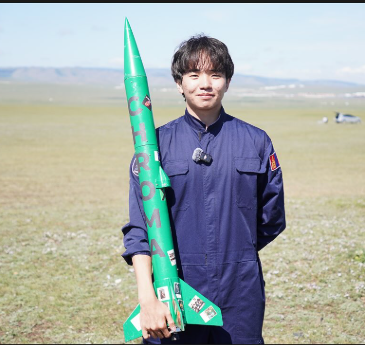
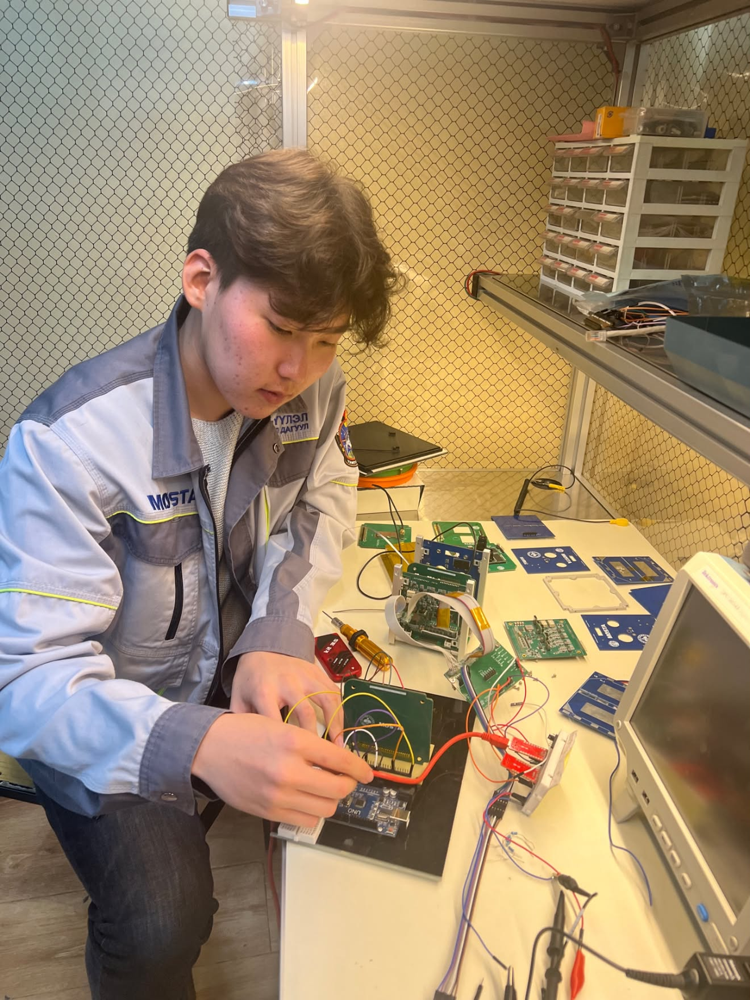

Icarus Space is a Mongolian based space technology startup dedicated to
developing AI powered Earth observation, environmental monitoring, and
climate resilience solutions. By combining proprietary machine learning
models and next generation LEO remote sensing with a reusable, low cost
space transport system, we are creating Mongolia's most resilient
end-to-end space platform infrastructure, trained on Mongolia's extreme
environment.
Around0%of Mongolia's land is already degraded,
and the eight forces driving it, overgrazing, deforestation, steppe fires,
unregulated mining, off-road tracks, unsustainable cropland, water misuse
and weak land-use planning, are all human made and therefore all solvable.
Mongolia has the will, and it has the budget. What it does not have is data
on where the land is degrading, how fast and why, so the money and the people
are spent blindly while the country keeps losing ground every year.
THE ORBIT
Low Earth Orbit is the next economic frontier, but slots and frequencies are
claimed on a "first-come, first-served" rule. Today, overtwo-thirdsof satellites belong to a single
foreign company, locking nations with limited technology out of space.
Mongolia currently lacks any domestic space market or infrastructure, leaving
us completely dependent on foreign suppliers. Without sovereign space and
atmospheric technology, we cannot independently track desertification, combat
extreme weather, or guarantee our own national data security.
Fig. 01 · Steppe degradation
Vision &mission
VISION
Mongolia aims to establish itself as a stable pillar and global hub for
space innovation.
Make satellite technology significantly more accessible.
Improve environmental protection and climate monitoring.
With practical space solutions today, we create the critical infrastructure
needed to protect our shared planet, drive sustainable economic growth, and
reach further than ever before.
MISSION
To build Mongolian launch systems and machine-learning data infrastructure
that protect ecosystems, combat desertification, and connect local communities.
We aim to make space technology fully accessible from the Mongolian steppe
through reusable launch infrastructure and build an independent path to orbit.
Our currentprojects
LAUNCH VEHICLES
High-Altitude Sounding Rocket Technology
Developing Mongolia's first 2-stage high-altitude rocket
(0 km target)
to flight-test our custom avionics, multispectral sensors, and high-speed
telemetry. The first missions are verifying the rocket's performance and
reliability, while validating the ground observation sensors to power the
machine-learning environmental models.
WEATHER MODIFICATION
Domestic Rocket Cloud Seeding Technology
100% Domestic & ReusableMongolia's first cloud seeding rocket, designed for up to 10 reuses with
minimal maintenance.
Nationwide Infrastructure, 47 SitesScaling across all 21 provinces, partnering with meteorological
departments in Ulaanbaatar, Khentii, and Selenge provinces.
Targeted Climate ImpactReplaces costly imported technologies to boost precipitation, directly
combating desertification and preserving herder grazing lands.
EARTH OBSERVATION
Environmental Monitoring Satellite
We are developing the technologies required for Mongolia's first
environmental monitoring satellite. Before launching it into LEO inQ3 2027,
in partnership with ONDOspace and
the NUM, we are conducting essential technology tests.
In October of this year, we will launch a high-altitude balloon30 to 40 kminto the stratosphere, measuring
8 critical indices including NDVI and NDWI at1.6 m² per pixel.
At an altitude 15 times
lower than standard satellites, this captures data 150 times higher in
quality than NASA's MODIS satellite at a significantly lower cost, letting
us measure and predict desertification, droughts, and zuds.
MACHINE LEARNING
AI-Based Environmental Prediction Model
A highly accurate AI forecasting model, trained in collaboration with GEE
and NAMEM on the most comprehensive dataset in Mongolia:0 yearsof historical climate and land degradation data measured every 7 to 10 days.
We presented the prototype alongside the Academy of Sciences at an
international scientific conference last June. Developed entirely in
Mongolia using exclusive local data, it has applications across B2C, B2B,
and B2G, protecting everyone from government agencies and mining companies
to local herders.
3 MONTHS
70 to 80% accuracyon droughts, zuds,
wildfires, and floods
1 TO 3 YEARS
75 to 90% accuracyon desertification
and land degradation
Aboutus
A deep-tech startup bringing Mongolian space hardware to global markets atsoftware speed.
OUR KEY ADVANTAGES
Strong R&D Infrastructure
Partnered with the Mongolian Academy of Sciences, NUM, and MUST to rapidly
prototype and test complex aerospace hardware in top labs.
Exclusive Data Access
By integrating Google Earth Engine with0 yearsof exclusive national meteorological data, we hold the largest database
anyone has in Mongolia, allowing the AI model to be trained on weekly data
tracking desertification, droughts, dzud, and temperature anomalies.
Fast and Flexible Engineering
Native R&D in Mongolia's harsh climate allows rapid engineering
iteration at a fraction of global aerospace costs.
Ourteam
Our team consists of0 core members,
supported by 4 technical and 3 business advisors. Highlighted below are the8 key memberswho actively lead and execute our
primary space projects.
B.Bat-Ireedui
FOUNDER & CEO
T.Temuulen
FOUNDER & CTO
B.Dulguun
CHIEF ENGINEER

B.Khuslen
COO
Ts.Chinbayar
EMBEDDED SYSTEMS ENGINEER
G.Odjargal
AEROSPACE ENGINEER

Ts.Jawkhlan
PAYLOAD INTEGRATION LEAD
M.Munkh-Orgil
ENGINEER, RESEARCH SCIENTIST
Get intouch
Partners, researchers, engineers and sponsors: we are building Mongolia's
first path to orbit, and we are looking for people to build it with.